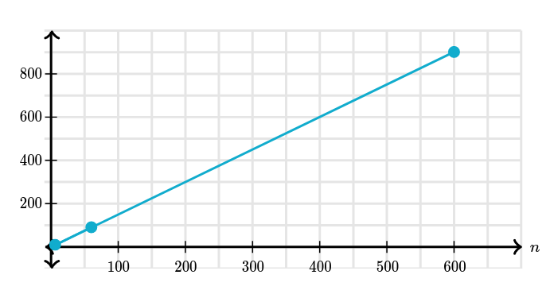
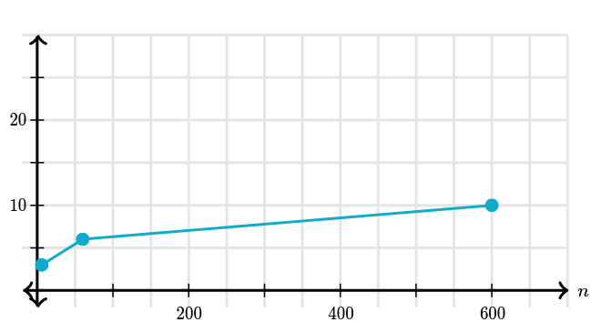

Important aspect --> Correctness
However the only way to prove is by: Formal Reasoning
One form of reasoning is "Proof by Induction"
PROCEDURE calcFactorial(n) {
factorial ← 1
i ← 1
REPEAT UNTIL (i > n) {
factorial ← factorial * i
i ← i + 1
}
RETURN factorial
}
To prove the algorithm is true for any positive number
Good algorithm is:
For example a linear search algorithm
PROCEDURE searchList(numbers, targetNumber) {
index ← 1
REPEAT UNTIL (index > LENGTH(numbers)) {
IF (numbers[index] = targetNumber) {
RETURN index
}
index ← index + 1
}
RETURN -1
}
It would take 4 procedures to find the index of 3 in [3,4,7]
The efficiency can be described as: 1 --> Variable init 2 --> N/2 loop repitions 3 --> 3 operations per loop
The equation is 1+3(n/2)

Measure time --> Programming Language
function searchList(numbers, targetNumber) {
for (var index = 0; index < numbers.length; index++) {
if (numbers[index] === targetNumber) {
return index;
}
}
return -1;
}
This also results in a linear graph:
PROCEDURE searchList(numbers, targetNumber) {
minIndex ← 1
maxIndex ← LENGTH(numbers)
REPEAT UNTIL (minIndex > maxIndex) {
middleIndex ← FLOOR((minIndex+maxIndex)/2)
IF (targetNumber = numbers[middleIndex]) {
RETURN middleIndex
} ELSE {
IF (targetNumber > numbers[middleIndex]) {
minIndex ← middleIndex + 1
} ELSE {
maxIndex ← middleIndex - 1
}
}
}
RETURN -1
}
searchList([3, 37, 45, 57, 93, 120], 45)
The algorithm has increasingly less numbers. This means it is not linear.

This is called Logarithmic